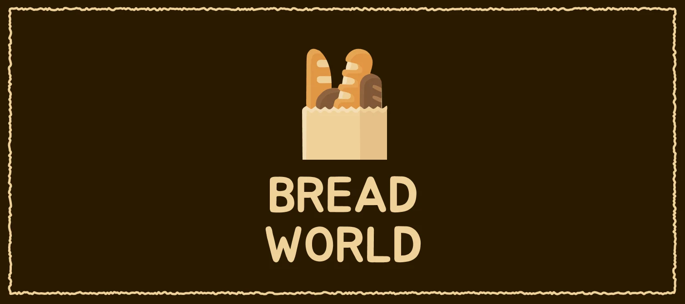
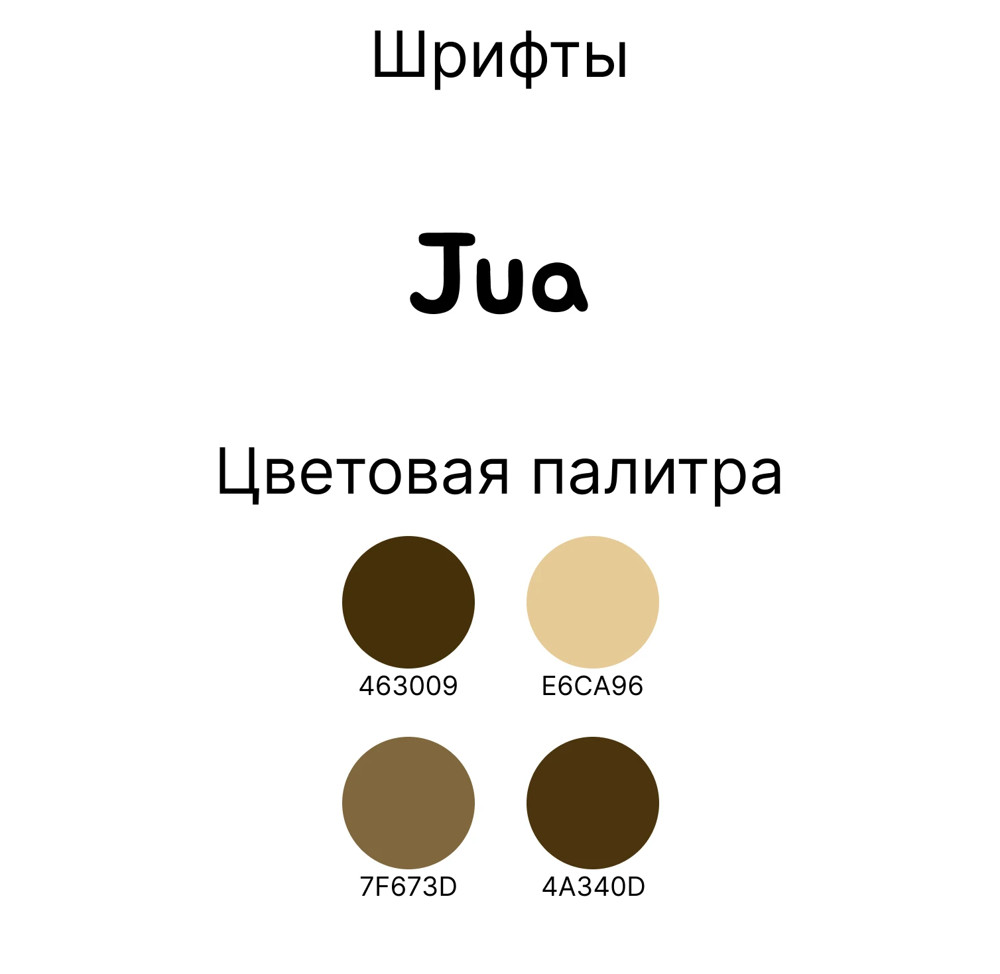
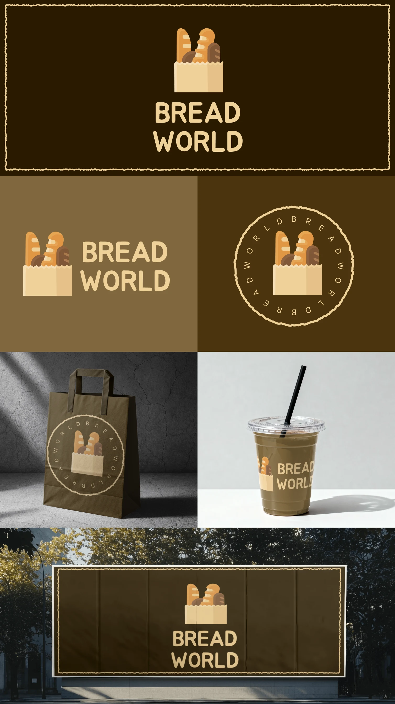

Bread World
Логотип и фирменный стиль пекарни Bread World.

- Клиент
- Bread World — пекарня
- Задача
- Разработать айдентику пекарни Bread World: логотип, знак, круглую печать, фирменную палитру и шрифт, а также показать применение на носителях — крафт-пакетах, стаканах и наружной рекламе, в горизонтальной, вертикальной и штампованной компоновке.
- Роль
- Графический дизайнер: логотип, иконочный знак, круглый штамп, фирменная палитра, сборка мокапов применения.
Пекарне не нужен «дизайнерский» минимализм — ей нужно, чтобы с прилавка считывалось «тепло и свежий хлеб». Поэтому знак сделан подчёркнуто иконочным и аппетитным: раскрытый бумажный пакет с торчащими багетами и караваем, залитый плоскими тёплыми цветами. Это не абстракция, а буквально то, с чем гость уходит из пекарни, — узнаётся мгновенно и одинаково работает крупно на вывеске и мелко на стакане.
Крафтовую, ремесленную ноту задаёт рваная рамка — линия с неровным, будто оторванным краем крафт-бумаги; она же превращается в кайму круглой печати, где вокруг знака по окружности бежит «BREAD WORLD». Три компоновки — вертикальная (знак над названием), горизонтальная (знак слева) и штамп — закрывают любой носитель. Палитра из четырёх тёплых коричнево-охристых тонов (тёмный 463009 для фона, светлый E6CA96 для текста и пакета, 7F673D и 4A340D как оттенки хлеба и корки) держит всю систему «поджаристой». Логотип набран округлым рубленым Jua — мягким и дружелюбным, без острых углов, под стать сдобному характеру бренда.


Айдентика собрана в трёх компоновках вокруг одного аппетитного знака и держит тёплую крафтовую подачу на любом носителе: круглая печать ложится на крафт-пакет, горизонтальный логотип — на стакан, а вертикальный в рваной рамке работает крупной наружной рекламой без переверстки.